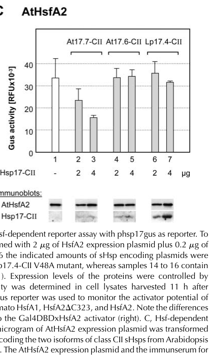

HSP17.7 (also known as At-HSP17.6A in older literature; locus At5g12030) is a 17.7 kDa cytosolic class II small heat shock protein (sHSP) in Arabidopsis thaliana. Like other sHSPs, it belongs to the HSP20/alpha-crystallin family characterized by a conserved alpha-crystallin domain (ACD). sHSPs function as ATP-independent holdase chaperones: they bind unfolding or denaturing substrate proteins to prevent irreversible aggregation, maintaining them in a soluble, refoldable state, but they do not actively refold substrates. Refolding requires subsequent transfer to ATP-dependent chaperone systems such as HSP70/DnaK. HSP17.7 forms oligomeric structures typical of sHSPs. Its expression is induced by heat stress and osmotic stress, and overexpression confers enhanced salt and drought tolerance. The chaperone (holdase) activity has been demonstrated in vitro (PMID:11576425).
| GO Term | Evidence | Action | Reason |
|---|---|---|---|
|
GO:0009408
response to heat
|
IBA
GO_REF:0000033 |
ACCEPT |
Summary: HSP17.7 is a small heat shock protein whose expression is induced by heat stress (PMID:11576425). The IBA annotation is well-supported by phylogenetic inference across the HSP20 family, with extensive evidence from multiple plant sHSP orthologs. Response to heat is a core biological process for all sHSPs.
Reason: Heat shock response is a defining characteristic of sHSPs. The annotation is supported by phylogenetic inference (IBA) and corroborated by direct experimental evidence from PMID:11576425, which demonstrated heat-inducible expression of this gene.
Supporting Evidence:
PMID:11576425
The At-HSP17.6A expression was induced by heat and osmotic stress, as well as during seed development.
file:ARATH/HSP17.7/HSP17.7-deep-research-falcon.md
act as **ATP-independent molecular chaperones** that bind non-native proteins during stress, **prevent aggregation**, and maintain substrates in a folding-competent state for later refolding by ATP-dependent chaperones (e.g., HSP70 systems; HSP100/ClpB-type disaggregases).
|
|
GO:0051082
unfolded protein binding
|
IBA
GO_REF:0000033 |
MODIFY |
Summary: GO:0051082 (unfolded protein binding) is proposed for obsoletion (go-ontology#30962). HSP17.7 is a classic sHSP holdase that binds unfolding proteins to prevent aggregation but does not actively refold them (PMID:11576425). Per UPB project decision rules, sHSPs should be reannotated to a holdase chaperone activity NTR when created. GO:0140309 (unfolded protein carrier activity) does not fit because it was created for carrier-holdases (TIM chaperones) that escort substrates between compartments, whereas sHSPs are in-situ holdases. Retain GO:0051082 until the holdase NTR is available.
Reason: sHSPs like HSP17.7 are ATP-independent holdases: they bind denaturing proteins to prevent aggregation in situ but do not actively refold them. GO:0044183 (protein folding chaperone) is inappropriate because sHSPs do not catalyze folding. GO:0140309 does not fit because it is carrier-specific (created for TIM chaperones per go-ontology#30552). A general holdase chaperone activity NTR is needed. Retain GO:0051082 until this NTR exists.
Proposed replacements:
holdase chaperone activity (NTR needed; GO:0140309 does not fit -- carrier-specific)
Supporting Evidence:
PMID:11576425
The chaperone activity of At-HSP17.6A was demonstrated in vitro.
file:ARATH/HSP17.7/HSP17.7-deep-research-falcon.md
Its best-supported primary function is as an **ATP-independent “holdase” chaperone** that binds stress-denatured client proteins to prevent irreversible aggregation and to support subsequent refolding/disaggregation by ATP-dependent chaperone systems (e.g., HSP70/HSP101).
file:ARATH/HSP17.7/HSP17.7-deep-research-falcon.md
act as **ATP-independent molecular chaperones** that bind non-native proteins during stress, **prevent aggregation**, and maintain substrates in a folding-competent state for later refolding by ATP-dependent chaperones (e.g., HSP70 systems; HSP100/ClpB-type disaggregases).
|
|
GO:0006457
protein folding
|
IBA
GO_REF:0000033 |
ACCEPT |
Summary: The annotation of HSP17.7 to GO:0006457 (protein folding) via IBA is phylogenetically inferred. sHSPs participate in the broader protein folding pathway by preventing aggregation and maintaining substrates in a refoldable state, but they do not themselves catalyze folding (that is done by downstream ATP-dependent chaperones like HSP70). The involved_in relationship captures the broader pathway participation appropriately, though it should be understood that the sHSP contribution is specifically holdase/ aggregation-prevention rather than active folding.
Reason: While sHSPs do not actively fold proteins, they participate in the protein folding process by preventing irreversible aggregation and maintaining substrates in a folding-competent state. The BP annotation (involved_in protein folding) is acceptable at the process level -- the sHSP step is part of the broader protein quality control/folding pathway. The IBA annotation is phylogenetically sound for the HSP20 family.
Supporting Evidence:
file:ARATH/HSP17.7/HSP17.7-deep-research-falcon.md
act as **ATP-independent molecular chaperones** that bind non-native proteins during stress, **prevent aggregation**, and maintain substrates in a folding-competent state for later refolding by ATP-dependent chaperones (e.g., HSP70 systems; HSP100/ClpB-type disaggregases).
|
|
GO:0009651
response to salt stress
|
IBA
GO_REF:0000033 |
KEEP AS NON CORE |
Summary: The IBA annotation for response to salt stress is supported by phylogenetic inference. PMID:11576425 demonstrated that overproduction of At-HSP17.6A (=HSP17.7) increases salt tolerance in Arabidopsis, providing direct experimental support for this annotation in this specific gene. However, salt stress response is secondary to the core chaperone function and represents a stress-responsive phenotype rather than the primary molecular role.
Reason: Salt stress response is a downstream phenotypic consequence of the holdase chaperone function rather than a core molecular activity. The gene is induced under osmotic stress and overexpression confers salt tolerance (PMID:11576425), but this reflects the protective role of the holdase rather than a salt-specific function. Kept as non-core.
Supporting Evidence:
PMID:11576425
Overproduction of At-HSP17.6A could increase salt and drought tolerance in Arabidopsis.
|
|
GO:0042542
response to hydrogen peroxide
|
IBA
GO_REF:0000033 |
KEEP AS NON CORE |
Summary: The IBA annotation for response to hydrogen peroxide is phylogenetically inferred from other plant sHSP orthologs. Oxidative stress can induce sHSP expression and sHSP holdase activity can protect against oxidative damage. However, there is no direct experimental evidence for HSP17.7 specifically in hydrogen peroxide response. This is a plausible but peripheral function.
Reason: Hydrogen peroxide response is likely a secondary stress-responsive role. The IBA inference is phylogenetically reasonable for the sHSP family, but it represents a peripheral stress response rather than the core holdase chaperone function. No direct experimental evidence for HSP17.7/O81822 specifically. Falcon deep research corroborates that this gene is broadly induced by oxidative/chemical stress (e.g. gallic acid, SO2) as part of a general proteostasis response, consistent with -- but not specific to -- a hydrogen peroxide response.
Supporting Evidence:
file:ARATH/HSP17.7/HSP17.7-deep-research-falcon.md
AtHsp17.7-CII is strongly inducible not only by heat but also by oxidative/chemical stress contexts, consistent with sHSP deployment as a general proteostasis mechanism under diverse proteotoxic stresses.
|
|
GO:0051259
protein complex oligomerization
|
IBA
GO_REF:0000033 |
ACCEPT |
Summary: sHSPs characteristically form large oligomeric complexes (typically 12-40mers) that dynamically dissociate and reassociate in response to stress. Oligomerization is fundamental to sHSP function: substrate binding occurs when the oligomer dissociates under stress. UniProt notes for HSP17.7 that it "may form oligomeric structures." The IBA annotation is well-supported across the sHSP family.
Reason: Oligomerization is a core structural and functional property of sHSPs. The IBA annotation is phylogenetically sound and consistent with UniProt annotation. This is integral to chaperone mechanism, not a peripheral function.
Supporting Evidence:
file:ARATH/HSP17.7/HSP17.7-deep-research-falcon.md
characterized by a conserved **α-crystallin domain** and typically forming oligomers.
|
|
GO:0005737
cytoplasm
|
IEA
GO_REF:0000044 |
ACCEPT |
Summary: Cytoplasmic localization is inferred from UniProt subcellular location annotation. HSP17.7 is described as a cytosolic class II sHSP in the literature (PMID:11576425), and UniProt annotates it as cytoplasmic. The more specific cytosol annotation (GO:0005829) also exists via TAS. This broader cytoplasm annotation is acceptable and consistent.
Reason: Cytoplasmic localization is well-established for this cytosolic class II sHSP. The IEA annotation is consistent with the TAS annotation for cytosol and with the published characterization of this protein as a cytosolic sHSP (PMID:11576425).
|
|
GO:0006950
response to stress
|
IEA
GO_REF:0000117 |
ACCEPT |
Summary: This IEA annotation to the general term GO:0006950 (response to stress) is computed by ARBA machine learning models. It is a very broad term, and more specific stress response terms (response to heat GO:0009408, response to salt stress GO:0009651) are already annotated. While not wrong, this general term adds little information beyond the more specific annotations.
Reason: The broad IEA annotation is correct -- HSP17.7 is a stress-responsive protein. While more specific stress annotations exist, the general term from an automated pipeline is acceptable and not misleading. IEA annotations at broader levels than what is determined by IBA or literature are acceptable.
|
|
GO:0071456
cellular response to hypoxia
|
HEP
PMID:31519798 Integrative Analysis from the Epigenome to Translatome Uncov... |
KEEP AS NON CORE |
Summary: This HEP (high-throughput expression pattern) annotation is based on PMID:31519798, a multi-omic study of Arabidopsis seedlings under hypoxia. The paper found that hypoxia promoted "a progressive upregulation of heat stress transcripts, as evidenced by RNAPII binding and increased nuclear RNA." HSP17.7 is a heat stress transcript that was progressively upregulated under hypoxia. This is an expression-based annotation with the weaker "acts_upstream_of_or_within" qualifier, reflecting that the gene is transcriptionally responsive to hypoxia rather than having a demonstrated functional role in hypoxia response.
Reason: The HEP annotation reflects transcriptional upregulation during hypoxia rather than a demonstrated functional role. The paper describes progressive upregulation of heat stress genes during hypoxia (PMID:31519798), which is a secondary stress cross-talk phenomenon. This is a peripheral annotation, not a core function.
Supporting Evidence:
PMID:31519798
Hypoxia promoted a progressive upregulation of heat stress transcripts, as evidenced by RNAPII binding and increased nuclear RNA, with polyadenylated RNA levels only elevated after prolonged stress or reoxygenation.
|
|
GO:0005737
cytoplasm
|
ISM
GO_REF:0000122 |
ACCEPT |
Summary: This ISM annotation is based on AtSubP (Arabidopsis Subcellular Proteome Prediction) computational analysis. Cytoplasmic localization is well-established for this cytosolic class II sHSP and is consistent with the IEA and TAS annotations. Duplicate of the IEA cytoplasm annotation but from a different computational method.
Reason: Consistent with multiple other lines of evidence for cytoplasmic localization. The ISM prediction agrees with UniProt subcellular annotation, the TAS cytosol annotation, and the characterization as a cytosolic sHSP (PMID:11576425).
|
|
GO:0006457
protein folding
|
IDA
PMID:11576425 At-HSP17.6A, encoding a small heat-shock protein in Arabidop... |
ACCEPT |
Summary: The IDA annotation to protein folding is based on the in vitro chaperone activity demonstrated in PMID:11576425. The paper showed that At-HSP17.6A (=HSP17.7, O81822) possesses chaperone activity in vitro. However, the sHSP mechanism is holdase-type: it prevents aggregation of denaturing substrates but does not actively refold them. The "acts_upstream_of_or_within" qualifier used in the GOA is appropriate, as the sHSP participates in the protein folding pathway upstream of the actual folding step.
Reason: The BP annotation with "acts_upstream_of_or_within" qualifier is appropriate. sHSPs participate in the protein quality control and folding pathway by preventing aggregation and maintaining substrates for subsequent refolding by HSP70-type foldases. The in vitro chaperone assay in PMID:11576425 demonstrated this activity. While sHSPs do not themselves fold proteins, involvement in the folding process at the BP level is accurate.
Supporting Evidence:
PMID:11576425
The chaperone activity of At-HSP17.6A was demonstrated in vitro.
|
|
GO:0051082
unfolded protein binding
|
IDA
PMID:11576425 At-HSP17.6A, encoding a small heat-shock protein in Arabidop... |
MODIFY |
Summary: The IDA annotation to GO:0051082 (unfolded protein binding) is based on the in vitro chaperone assay in PMID:11576425, which demonstrated that At-HSP17.6A (=HSP17.7) binds denaturing substrate proteins and prevents their aggregation. This is holdase activity -- the sHSP binds unfolding proteins without actively refolding them. Per UPB project rules, GO:0051082 is proposed for obsoletion and should be replaced with a holdase chaperone activity NTR when available. GO:0044183 (protein folding chaperone) is NOT appropriate for pure holdases. GO:0140309 is carrier-specific and does not fit in-situ holdases.
Reason: GO:0051082 is being obsoleted (go-ontology#30962). HSP17.7 is a classic sHSP holdase: it prevents aggregation of denaturing proteins in situ without active refolding. Per UPB project decision rules for sHSPs/holdases, retain GO:0051082 until a holdase chaperone activity NTR is created. GO:0044183 is not appropriate (sHSPs do not actively fold). GO:0140309 does not fit (carrier-specific, created for TIM chaperones per go-ontology#30552).
Proposed replacements:
holdase chaperone activity (NTR needed; GO:0140309 does not fit -- carrier-specific)
Supporting Evidence:
PMID:11576425
The chaperone activity of At-HSP17.6A was demonstrated in vitro.
|
|
GO:0006972
hyperosmotic response
|
IMP
PMID:11576425 At-HSP17.6A, encoding a small heat-shock protein in Arabidop... |
KEEP AS NON CORE |
Summary: The IMP annotation is based on PMID:11576425, which demonstrated that overexpression of At-HSP17.6A (=HSP17.7) enhanced salt and drought tolerance in Arabidopsis. The gene expression is induced by osmotic stress at the mRNA level, though protein accumulation was not detected under osmotic stress alone (only under heat). Overexpression conferred increased tolerance to hyperosmotic conditions, supporting the IMP evidence. The "acts_upstream_of_or_within" qualifier is appropriate.
Reason: The hyperosmotic response represents a stress-protective phenotype mediated by the holdase chaperone activity rather than a core molecular function. The gene is transcriptionally induced by osmotic stress, and overexpression confers osmotolerance (PMID:11576425), but this is a downstream consequence of the general proteostasis function. Kept as non-core.
Supporting Evidence:
PMID:11576425
Overproduction of At-HSP17.6A could increase salt and drought tolerance in Arabidopsis.
PMID:11576425
The At-HSP17.6A expression was induced by heat and osmotic stress, as well as during seed development. Accumulation of At-HSP17.6A proteins could be detected with heat and at a late stage of seed development, but not with osmotic stress
|
|
GO:0005829
cytosol
|
TAS
PMID:11576425 At-HSP17.6A, encoding a small heat-shock protein in Arabidop... |
ACCEPT |
Summary: The TAS annotation to cytosol is based on the characterization of At-HSP17.6A (=HSP17.7) as a "cytosolic class II smHSP" in PMID:11576425. The literature consistently describes class II plant sHSPs as cytosolic proteins. This is a more specific localization than the broader cytoplasm annotations (IEA, ISM) and is well-supported.
Reason: Cytosolic localization is a core feature of this class II sHSP. The TAS evidence from PMID:11576425 is consistent with the classification of At-HSP17.6A as a cytosolic class II small heat shock protein, and with the broader cytoplasm annotations from UniProt and AtSubP prediction.
Supporting Evidence:
PMID:11576425
the gene that encoded the cytosolic class II smHSP in Arabidopsis thaliana (At-HSP17.6A) was characterized.
file:ARATH/HSP17.7/HSP17.7-deep-research-falcon.md
AtHsp17.7 is consistently categorized as **cytosolic class II**, which supports a **cytosolic** site of action
|
Q: Does AtHsp17.7-CII (At5g12030) function as a regulator of the heat shock response by repressing HsfA2 in planta, and is this repression isoform-specific relative to other cytosolic class II sHSPs? Falcon deep research surfaced gene-specific reporter evidence (Port et al. 2004) that AtHsp17.7-CII selectively represses AtHsfA2 transcriptional activity while the closely related AtHsp17.6-CII does not, but a direct physical AtHsp17.7-CII/AtHsfA2 interaction was not detected in non-reporter assays. If confirmed in Arabidopsis, a GO:0043433 (negative regulation of DNA-binding transcription factor activity) annotation may be warranted.
Q: What is the developmental role of AtHsp17.7-CII in seed maturation downstream of the ABI3 -> HsfA9 cascade? Falcon evidence indicates the protein accumulates from mid- through late seed maturation and dry seeds and that accumulation is abolished in the abi3 mutant, suggesting a GO:0010431 (seed maturation) involvement that is not currently annotated.
Experiment: Test AtHsfA2-dependent reporter activity in Arabidopsis protoplasts (rather than tobacco) with titrated AtHsp17.7-CII vs AtHsp17.6-CII co-expression, and assay direct physical interaction (co-IP, BiFC, or in vitro pulldown) between purified AtHsp17.7-CII and AtHsfA2 to determine whether repression is via direct binding or an indirect mechanism.
Hypothesis: AtHsp17.7-CII acts as an isoform-specific negative regulator of the heat shock transcription factor HsfA2 in Arabidopsis.
Type: reporter assay and protein interaction assay
Experiment: Generate At5g12030 loss-of-function (T-DNA/CRISPR) and overexpression lines and assess seed viability, desiccation tolerance, and longevity, alongside immunoblot quantification of AtHsp17.7-CII accumulation across seed maturation stages in WT vs abi3 and hsfA9 backgrounds.
Hypothesis: AtHsp17.7-CII contributes to seed desiccation tolerance proteostasis as a downstream target of the ABI3/HsfA9 maturation program.
Type: reverse genetics and developmental immunoblot
The research report should be a detailed narrative explaining the function, biological processes, and localization of the gene product. Citations should be given for all claims.
You should prioritize authoritative reviews and primary scientific literature when conducting research. You can supplement
this with annotations you find in gene/protein databases, but these can be outdated or inaccurate.
We are specifically interested in the primary function of the gene - for enzymes, what reaction is catalyzed, and what is the substrate specificity? For transporters, what is the substrate? For structural proteins or adapters, what is the broader structural role? For signaling molecules, what is the role in the pathway.
We are interested in where in or outside the cell the gene product carries out its function.
We are also interested in the signaling or biochemical pathways in which the gene functions. We are less interested in broad pleiotropic effects, except where these elucidate the precise role.
Include evidence where possible. We are interested in both experimental evidence as well as inference from structure, evolution, or bioinformatic analysis. Precise studies should be prioritized over high-throughput, where available.
Arabidopsis HSP17.7 (At5g12030; AtHsp17.7-CII) encodes a ~17.7 kDa cytosolic class II small heat shock protein (sHSP; HSP20 family) with an α-crystallin domain. Its best-supported primary function is as an ATP-independent “holdase” chaperone that binds stress-denatured client proteins to prevent irreversible aggregation and to support subsequent refolding/disaggregation by ATP-dependent chaperone systems (e.g., HSP70/HSP101). Direct gene-specific evidence also indicates a second, regulatory role: AtHsp17.7-CII selectively represses the activity of the heat shock transcription factor AtHsfA2 in a heterologous plant reporter system, consistent with sHSP-mediated tuning of the heat shock response. Developmentally, AtHsp17.7-CII is a major seed sHSP that accumulates during mid/late seed maturation under control of an ABI3 → HsfA9 → HSP transcriptional cascade. Under abiotic and chemical stresses it is highly inducible at the transcript level (e.g., ~15–16× induction in microarray datasets). Recent reviews (2023–2024) place cytosolic class I/II sHSPs within dynamic heat stress granule (HSG) regulation of HSFs and thermomemory, supporting current models in which sHSPs act both as protein-quality-control factors and as regulatory components of heat-response circuitry. (sun2002smallheatshock pages 5-6, kotak2007anoveltranscriptional pages 9-10, kotak2007anoveltranscriptional pages 5-6, golisz2008microarrayexpressionprofiling pages 4-5, li2012differentialexpressionof pages 4-5, port2004roleofhsp17.4cii media a91d69d5, bakery2024heatstresstranscription pages 7-8)
Plant sHSPs are a diverse family of low-molecular-weight heat shock proteins characterized by a conserved α-crystallin domain and typically forming oligomers. Functionally, they act as ATP-independent molecular chaperones that bind non-native proteins during stress, prevent aggregation, and maintain substrates in a folding-competent state for later refolding by ATP-dependent chaperones (e.g., HSP70 systems; HSP100/ClpB-type disaggregases). (sun2002smallheatshock pages 5-6, tariq2010anoverviewon pages 1-2)
Cytosolic/nuclear sHSPs in plants include multiple classes; class II (CII) sHSPs are assigned to the cytosolic compartment (often discussed together with nuclear localization potential at the class level). AtHsp17.7-CII is one of the Arabidopsis cytosolic class II sHSPs. (sun2002smallheatshock pages 4-5, tariq2010anoverviewon pages 1-2)
Canonical heat-inducible expression of HSP genes is mediated by HSFs binding heat shock elements (HSEs) in promoters. In seeds, plant developmental programs additionally regulate HSP expression: reviews summarize evidence that ABI3 and HSFs can synergize on Hsp17.7-type promoters by enhancing HSF action at HSEs, linking hormone/developmental signaling to sHSP expression. (sun2002smallheatshock pages 4-5, sun2002smallheatshock pages 5-6)
Direct biochemical assays for AtHsp17.7-CII itself were not identified in the retrieved full texts. However, AtHsp17.7-CII belongs to the plant cytosolic class II sHSP group for which the canonical mechanism is well established: binding partially denatured proteins, preventing aggregation, and enabling downstream refolding/disaggregation by ATP-dependent systems. This is the most defensible primary function assignment for AtHsp17.7-CII based on family membership and conserved mechanistic literature. (sun2002smallheatshock pages 5-6, tariq2010anoverviewon pages 1-2)
Interpretation: For functional annotation, AtHsp17.7-CII is best annotated as an ATP-independent molecular chaperone involved in proteostasis during heat and other stresses, with activity exerted mainly in the cytosol (and potentially the nucleus, by class-level assignment). (sun2002smallheatshock pages 4-5, tariq2010anoverviewon pages 1-2)
A key gene-specific mechanistic result is that AtHsp17.7-CII represses AtHsfA2 transcriptional activity in an HSF-dependent reporter assay performed in tobacco protoplasts. Importantly, the repression is isoform-selective: the closely related AtHsp17.6-CII does not repress AtHsfA2 in the same assay, and a tomato Hsp17.4-CII does not repress AtHsfA2, indicating specificity. (port2004roleofhsp17.4cii pages 7-9, port2004roleofhsp17.4cii pages 9-11, port2004roleofhsp17.4cii media a91d69d5)
The figure supporting this (Port et al., 2004, Plant Physiology, published July 2004; URL: https://doi.org/10.1104/pp.104.042820) shows dose-dependent reduction of GUS activity (RFU ×10^-3) upon increasing AtHsp17.7-CII coexpression (Figure 7C). (port2004roleofhsp17.4cii media a91d69d5)
Caveat: The same study reports that for the Arabidopsis proteins the interaction was not detected in other interaction assays, so the strongest evidence is functional (reporter output) rather than direct physical binding under their tested conditions. (port2004roleofhsp17.4cii pages 9-11)
Biological implication (expert synthesis): AtHsp17.7-CII likely contributes to tuning/attenuating HsfA2-driven transcription during stress or recovery, consistent with models where sHSPs participate in feedback regulation of the heat shock response in addition to proteostasis. (port2004roleofhsp17.4cii pages 1-2, bakery2024heatstresstranscription pages 7-8)
AtHsp17.7-CII is a prominent seed sHSP:
It accumulates beginning at mid-maturation and is abundant through late maturation and in dry seeds, consistent with a role in late seed development and desiccation tolerance. (Sun et al., 2002, published Aug 2002; URL: https://doi.org/10.1016/S0167-4781(02)00417-7) (sun2002smallheatshock pages 4-5)
In the abi3 mutant (desiccation-intolerant), AtHsp17.7-CII accumulation is abolished, supporting dependence on the ABI3-controlled seed maturation program. (sun2002smallheatshock pages 4-5)
Primary evidence for the regulatory cascade comes from Kotak et al. (2007, The Plant Cell, published Jan 2007; URL: https://doi.org/10.1105/tpc.106.048165):
Stress vs developmental regulation separation: Kotak et al. also show that heat induction of Hsp17.7-CII transcripts in siliques occurs even in abi3-6, i.e., heat-inducible expression can be ABI3-independent (in contrast to developmental seed accumulation). (kotak2007anoveltranscriptional pages 5-6)
Gene-specific transcript induction has been quantified in multiple microarray studies:
Gallic acid (allelochemical) exposure: At5g12030 (annotated as 17.7 kDa class II HSP; HSP17.7-CII) is induced 15.57-fold after 6 h exposure; P = 0.02 (Golisz et al., 2008, J. Exp. Bot., published Jul 2008; URL: https://doi.org/10.1093/jxb/ern168). (golisz2008microarrayexpressionprofiling pages 4-5)
Sulfur dioxide (SO2) exposure: At5g12030 shows log2 ratio = 4.0 (≈ 16-fold) with P < 0.01 among SO2-responsive defense/stress genes (Li & Yi, 2012, Chemosphere, published May 2012; URL: https://doi.org/10.1016/j.chemosphere.2011.12.064). (li2012differentialexpressionof pages 4-5)
Interpretation: AtHsp17.7-CII is strongly inducible not only by heat but also by oxidative/chemical stress contexts, consistent with sHSP deployment as a general proteostasis mechanism under diverse proteotoxic stresses. (li2012differentialexpressionof pages 4-5, golisz2008microarrayexpressionprofiling pages 4-5, sun2002smallheatshock pages 5-6)
Within the retrieved evidence set, AtHsp17.7 is consistently categorized as cytosolic class II, which supports a cytosolic site of action (and sometimes class-level cytosol/nucleus discussion in reviews). (sun2002smallheatshock pages 4-5, tariq2010anoverviewon pages 1-2)
A key limitation is that a direct At5g12030-specific localization assay (e.g., AtHsp17.7-GFP in Arabidopsis) was not extracted from the retrieved texts.
Although not specific to At5g12030, Arabidopsis cytosolic class II sHSPs have been localized by immunolocalization to cytosolic foci during heat stress and show partial overlap with HSP101 puncta; genetic perturbation of CI or CII sHSP accumulation alters heat recovery phenotypes, supporting functional relevance of these foci/granules to thermotolerance. (McLoughlin et al., 2016, Plant Physiology, published Jul 2016; URL: https://doi.org/10.1104/pp.16.00536) (mcloughlin2016classiand pages 20-23, mcloughlin2016classiand pages 1-4)
Recent synthesis further links HSF biology to granule dynamics: a 2024 New Phytologist review proposes that an HSFA2 isoform can be sequestered in cytosolic heat stress granules via interactions with class CI and class CII sHSPs, then released during recovery to participate in transcriptional regulation and heat-stress memory. (Bakery et al., 2024, New Phytologist, published Jul 2024; URL: https://doi.org/10.1111/nph.20017) (bakery2024heatstresstranscription pages 7-8)
The strongest gene-specific pathway placement is in late seed development:
This provides a mechanistically grounded annotation: AtHsp17.7 contributes to seed maturation/desiccation tolerance proteostasis downstream of ABI3/HsfA9. (sun2002smallheatshock pages 4-5, kotak2007anoveltranscriptional pages 9-10)
Port et al. show AtHsp17.7-CII selectively represses AtHsfA2 activity in reporter assays, implying a potential feedback/attenuation loop within the heat shock response. (port2004roleofhsp17.4cii media a91d69d5)
A 2024 review contextualizes this relationship by citing sHSPs as modulators of HsfA2 localization/activity and integrating these interactions into a broader HSF “rheostat” model of response intensity and recovery. (bakery2024heatstresstranscription pages 13-14, bakery2024heatstresstranscription pages 7-8)
A 2023 review emphasizes that one of the earliest heat responses is a rapid increase in cytosolic Ca2+, which is decoded by Ca2+-binding proteins and feeds into downstream cascades, ultimately shaping HSF/HSP induction. While it does not provide AtHsp17.7-specific mechanisms, it frames HSP induction (including sHSP17.x genes across plants) as embedded within Ca2+/NO/ROS cross-talk and thermotolerance signaling networks. (Kang et al., 2023, Int. J. Mol. Sci., published Dec 2023; URL: https://doi.org/10.3390/ijms25010324) (kang2023calciumsignalingand pages 14-16)
Bakery et al. (2024) synthesize evidence that HSFs act as a molecular rheostat tuning response intensity and recovery. The review highlights mechanistic levers relevant to AtHsp17.7-CII annotation:
Relevance to AtHsp17.7-CII: because AtHsp17.7-CII is a cytosolic class II sHSP and has direct functional evidence for modulating HsfA2 activity (Port et al., 2004), these models support annotating AtHsp17.7 as potentially participating in HSF/HSG-mediated feedback control in addition to holdase activity. (port2004roleofhsp17.4cii media a91d69d5, bakery2024heatstresstranscription pages 7-8)
A 2024 experimental biotechnology study demonstrates that a plant Hsp17.7 homolog (carrot DcHsp17.7) can substantially enhance the activity of a recombinant thermotolerant enzyme in vitro, supporting the view that plant sHSPs can be exploited as chaperones for recombinant protein production. (Jung et al., 2024, published Jul 2024; URL: https://doi.org/10.30498/ijb.2024.442517.3878) (jung2024plantheatshock pages 1-3)
Although not Arabidopsis At5g12030, there is strong application evidence for the broader sHSP17.7 class:
These results support translational interest in cytosolic sHSPs as engineering targets/biomarkers for thermotolerance, but functional non-equivalence among paralogs (as seen for AtHsp17.7 vs AtHsp17.6 in AtHsfA2 repression) argues for caution in assuming interchangeability. (port2004roleofhsp17.4cii media a91d69d5)
Jung et al. (2024) provide a direct application: plant Hsps can be used to enhance recombinant enzyme output. DcHsp17.7 increased ADH activity up to 13-fold at 37°C and showed synergy with Hsp70 systems. This supports consideration of plant sHSPs (including Arabidopsis ortholog classes) as co-expression partners in microbial cell factories for improving enzyme activity/solubility. (jung2024plantheatshock pages 1-3)
Port et al. (2004) show AtHsp17.7-CII reduces AtHsfA2 reporter output measured as GUS activity (RFU ×10^-3) in a dose-dependent fashion, while AtHsp17.6-CII does not. (port2004roleofhsp17.4cii media a91d69d5)
Jung et al. (2024) report:
* DcHsp17.7 increased recombinant ADH activity up to 13.0-fold at 37°C; combinations reached 13.8–14.2-fold. (jung2024plantheatshock pages 1-3)
* DcHsp17.7 increased ADH solubility up to 1.6-fold (with defined in vitro concentrations and temperatures). (jung2024plantheatshock pages 5-9)
Murakami et al. (2004) report, for E. coli expressing rice sHSP17.7:
* Survival >90% after 15 min at 60°C and >60% after 45 min, about 2× higher than control. (murakami2004overexpressionofa pages 6-8)
Given these gaps, the most defensible gene model is: AtHsp17.7-CII likely behaves as a canonical cytosolic sHSP holdase and participates in regulatory feedback on heat-response transcription (HsfA2), with a particularly prominent role in seed maturation proteostasis; however, the extent to which AtHsp17.7 has unique clients or unique phenotypes distinct from other cytosolic class II paralogs remains unresolved from the present evidence set. (port2004roleofhsp17.4cii media a91d69d5, sun2002smallheatshock pages 4-5)
| Claim/annotation (function/localization/regulation) | Evidence type | Key experimental system/conditions | Quantitative data (fold change, log2 ratio, assay units) | Source (authors, year, journal) | URL | Context ID citation |
|---|---|---|---|---|---|---|
| HSP17.7 is the Arabidopsis thaliana At5g12030 gene product, annotated as a cytosolic class II small heat shock protein (AtHsp17.7-CII) in the HSP20/sHSP family | Curated annotation/review synthesis | Arabidopsis sHSP classification and seed/stress expression literature summarized for plant sHSPs | Not applicable | Sun et al., 2002, Biochim. Biophys. Acta | https://doi.org/10.1016/S0167-4781(02)00417-7 | (sun2002smallheatshock pages 4-5, sun2002smallheatshock pages 5-6) |
| HSP17.7 accumulates during seed maturation and is abundant in dry seeds, supporting a role in seed maturation/desiccation tolerance | Developmental expression | Arabidopsis seeds across maturation stages; protein/transcript accumulation summarized from primary studies | Begins at mid-maturation; abundant through late maturation and dry seed | Sun et al., 2002, Biochim. Biophys. Acta | https://doi.org/10.1016/S0167-4781(02)00417-7 | (sun2002smallheatshock pages 4-5) |
| HSP17.7 seed expression depends on ABI3-dependent developmental regulation | Mutant expression analysis | ABI3 knockout/desiccation-intolerant mutant seeds (abi3 lines) lacking normal seed maturation program | Hsp17.7-CII not detectable in ABI3 knockout lines; no fold value reported | Kotak et al., 2007, The Plant Cell | https://doi.org/10.1105/tpc.106.048165 | (kotak2007anoveltranscriptional pages 1-2, kotak2007anoveltranscriptional pages 9-10, kotak2007anoveltranscriptional pages 5-6) |
| HSP17.7 is a downstream target of the ABI3→HsfA9 seed developmental transcriptional cascade | Transcriptional regulation/reporter reconstruction | Arabidopsis seed system plus transient reporter assays showing ABI3 activates HsfA9 promoter and HsfA9 activates Hsp promoters | No direct numeric fold value for HSP17.7 promoter activation provided in excerpt | Kotak et al., 2007, The Plant Cell | https://doi.org/10.1105/tpc.106.048165 | (kotak2007anoveltranscriptional pages 1-2, kotak2007anoveltranscriptional pages 9-10) |
| Heat induction of HSP17.7 in siliques does not require ABI3/HsfA9 | Stress-induction RT-PCR/immunoblot | Wild-type and abi3-6 siliques at different developmental stages heat-stressed at 38°C for 2 h | Hsp17.7-CII transcripts induced at comparable levels in heat-stressed WT and abi3-6; no fold value reported | Kotak et al., 2007, The Plant Cell | https://doi.org/10.1105/tpc.106.048165 | (kotak2007anoveltranscriptional pages 5-6) |
| HSP17.7 is regulated by HSFs through heat shock elements (HSEs); ABI3 can enhance HSF-dependent activation on Hsp17.7-type promoters | Regulatory inference supported by promoter studies | Plant sHSP promoter analyses summarized in review; HSE integrity and HSF activation domain required for ABI3-dependent enhancement | No gene-specific fold value for At5g12030 reported | Sun et al., 2002, Biochim. Biophys. Acta | https://doi.org/10.1016/S0167-4781(02)00417-7 | (sun2002smallheatshock pages 4-5, sun2002smallheatshock pages 5-6) |
| HSP17.7 is strongly inducible by non-heat chemical stress (gallic acid) | Microarray stress induction | Arabidopsis exposed 6 h to allelochemicals in aquaculture medium; Table 2 gene expression profiling | 15.57-fold induction; P=0.02 | Golisz et al., 2008, Journal of Experimental Botany | https://doi.org/10.1093/jxb/ern168 | (golisz2008microarrayexpressionprofiling pages 4-5) |
| HSP17.7 is induced by sulfur dioxide stress as part of defense/stress response | Microarray stress induction | SO2-treated Arabidopsis vs untreated control in defense-related gene expression study | Log2 ratio = 4.0 (~16-fold); P<0.01 | Li & Yi, 2012, Chemosphere | https://doi.org/10.1016/j.chemosphere.2011.12.064 | (li2012differentialexpressionof pages 4-5) |
| HSP17.7 can specifically repress Arabidopsis HsfA2 activity, indicating a regulatory role beyond generic chaperoning | Reporter assay | Tobacco protoplast Hsf-dependent GUS reporter assay with AtHsfA2 coexpressed with Arabidopsis class II sHSPs | GUS activity (RFU ×10^-3) decreased dose-dependently with increasing AtHsp17.7-CII; exact values not given in excerpt/image summary | Port et al., 2004, Plant Physiology | https://doi.org/10.1104/pp.104.042820 | (port2004roleofhsp17.4cii pages 7-9, port2004roleofhsp17.4cii pages 1-2, port2004roleofhsp17.4cii media a91d69d5) |
| Repression of AtHsfA2 is selective: AtHsp17.7-CII represses, but the closely related AtHsp17.6-CII does not | Comparative reporter assay | Same tobacco protoplast GUS reporter system comparing Arabidopsis class II sHSP isoforms | AtHsp17.6-CII showed minimal/no repression; assay axis RFU ×10^-3 | Port et al., 2004, Plant Physiology | https://doi.org/10.1104/pp.104.042820 | (port2004roleofhsp17.4cii pages 7-9, port2004roleofhsp17.4cii pages 9-11, port2004roleofhsp17.4cii media a91d69d5) |
| The AtHsp17.7-CII effect on AtHsfA2 appears species-selective; tomato Hsp17.4-CII did not repress Arabidopsis HsfA2 in the same assay | Comparative reporter assay | Tobacco protoplast Hsf-dependent GUS reporter with AtHsfA2 plus tomato Hsp17.4-CII | Minimal/no effect on GUS activity; assay axis RFU ×10^-3 | Port et al., 2004, Plant Physiology | https://doi.org/10.1104/pp.104.042820 | (port2004roleofhsp17.4cii pages 7-9, port2004roleofhsp17.4cii pages 1-2, port2004roleofhsp17.4cii media a91d69d5) |
| Direct physical interaction between AtHsp17.7-CII and AtHsfA2 was not detected in non-reporter assays, so the regulatory relationship is strongest at the functional assay level | Interaction assay interpretation | Reporter assays positive, but other interaction assays for Arabidopsis pair negative; contrasted with stronger tomato biochemical interaction data | No quantitative binding constant reported | Port et al., 2004, Plant Physiology | https://doi.org/10.1104/pp.104.042820 | (port2004roleofhsp17.4cii pages 9-11) |
| As a class II cytosolic sHSP, HSP17.7 is inferred to function as an ATP-independent molecular chaperone that binds nonnative proteins and helps prevent irreversible aggregation | Family-level mechanistic evidence/inference | General plant sHSP biochemical literature summarized in review; applies to cytosolic class II proteins including AtHsp17.7 by family/domain membership | No AtHsp17.7-specific kinetic values in excerpt | Sun et al., 2002, Biochim. Biophys. Acta | https://doi.org/10.1016/S0167-4781(02)00417-7 | (sun2002smallheatshock pages 5-6, tariq2010anoverviewon pages 1-2) |
| Cytosolic/nuclear localization is supported for plant class II sHSPs, but no direct localization assay specific to At5g12030 was identified in the retrieved evidence | Localization by family assignment/inference | Reviews classify class II sHSPs as cytosolic/nuclear; direct AtHsp17.7 localization experiment not extracted here | Not applicable | Tariq et al., 2010, African Journal of Biotechnology; Sun et al., 2002, Biochim. Biophys. Acta | https://doi.org/10.5897/AJB09.006 ; https://doi.org/10.1016/S0167-4781(02)00417-7 | (sun2002smallheatshock pages 5-6, tariq2010anoverviewon pages 1-2) |
Table: This table summarizes direct and inferred evidence for Arabidopsis thaliana HSP17.7/At5g12030, covering developmental regulation, abiotic stress induction, functional reporter assays, and localization/function inferences. It is useful for separating gene-specific experiments from family-level annotation.
Port et al. (2004) Figure 7C provides direct visual support for isoform-specific repression of AtHsfA2 transcriptional activity by AtHsp17.7-CII (GUS reporter readout; RFU ×10^-3). (port2004roleofhsp17.4cii media a91d69d5)
References
(sun2002smallheatshock pages 5-6): Weining Sun, Marc Van Montagu, and Nathalie Verbruggen. Small heat shock proteins and stress tolerance in plants. Biochimica et biophysica acta, 1577 1:1-9, Aug 2002. URL: https://doi.org/10.1016/s0167-4781(02)00417-7, doi:10.1016/s0167-4781(02)00417-7. This article has 872 citations.
(kotak2007anoveltranscriptional pages 9-10): Sachin Kotak, Elizabeth Vierling, Helmut Bäumlein, and Pascal von Koskull-Döring. A novel transcriptional cascade regulating expression of heat stress proteins during seed development ofarabidopsis. The Plant Cell, 19:182-195, Jan 2007. URL: https://doi.org/10.1105/tpc.106.048165, doi:10.1105/tpc.106.048165. This article has 367 citations.
(kotak2007anoveltranscriptional pages 5-6): Sachin Kotak, Elizabeth Vierling, Helmut Bäumlein, and Pascal von Koskull-Döring. A novel transcriptional cascade regulating expression of heat stress proteins during seed development ofarabidopsis. The Plant Cell, 19:182-195, Jan 2007. URL: https://doi.org/10.1105/tpc.106.048165, doi:10.1105/tpc.106.048165. This article has 367 citations.
(golisz2008microarrayexpressionprofiling pages 4-5): Anna Golisz, Mami Sugano, and Yoshiharu Fujii. Microarray expression profiling of arabidopsis thaliana l. in response to allelochemicals identified in buckwheat. Journal of Experimental Botany, 59:3099-3109, Jul 2008. URL: https://doi.org/10.1093/jxb/ern168, doi:10.1093/jxb/ern168. This article has 103 citations and is from a domain leading peer-reviewed journal.
(li2012differentialexpressionof pages 4-5): Lihong Li and Huilan Yi. Differential expression of arabidopsis defense-related genes in response to sulfur dioxide. Chemosphere, 87 7:718-24, May 2012. URL: https://doi.org/10.1016/j.chemosphere.2011.12.064, doi:10.1016/j.chemosphere.2011.12.064. This article has 59 citations and is from a peer-reviewed journal.
(port2004roleofhsp17.4cii media a91d69d5): Markus Port, Joanna Tripp, Dirk Zielinski, Christian Weber, Dirk Heerklotz, Sybille Winkelhaus, Daniela Bublak, and Klaus-Dieter Scharf. Role of hsp17.4-cii as coregulator and cytoplasmic retention factor of tomato heat stress transcription factor hsfa2. Plant Physiology, 135:1457-1470, Jul 2004. URL: https://doi.org/10.1104/pp.104.042820, doi:10.1104/pp.104.042820. This article has 128 citations and is from a highest quality peer-reviewed journal.
(bakery2024heatstresstranscription pages 7-8): Ayat Bakery, Stavros Vraggalas, Boushra Shalha, Harsh Chauhan, Moussa Benhamed, and Sotirios Fragkostefanakis. Heat stress transcription factors as the central molecular rheostat to optimize plant survival and recovery from heat stress. The New phytologist, 244:51-64, Jul 2024. URL: https://doi.org/10.1111/nph.20017, doi:10.1111/nph.20017. This article has 90 citations.
(tariq2010anoverviewon pages 1-2): Mahmood Tariq, Safdar Waseem, Haider Abbasi Bilal, and M Saqlan Naqvi S. An overview on the small heat shock proteins. African Journal of Biotechnology, 9:927-939, Feb 2010. URL: https://doi.org/10.5897/ajb09.006, doi:10.5897/ajb09.006. This article has 66 citations.
(sun2002smallheatshock pages 4-5): Weining Sun, Marc Van Montagu, and Nathalie Verbruggen. Small heat shock proteins and stress tolerance in plants. Biochimica et biophysica acta, 1577 1:1-9, Aug 2002. URL: https://doi.org/10.1016/s0167-4781(02)00417-7, doi:10.1016/s0167-4781(02)00417-7. This article has 872 citations.
(port2004roleofhsp17.4cii pages 7-9): Markus Port, Joanna Tripp, Dirk Zielinski, Christian Weber, Dirk Heerklotz, Sybille Winkelhaus, Daniela Bublak, and Klaus-Dieter Scharf. Role of hsp17.4-cii as coregulator and cytoplasmic retention factor of tomato heat stress transcription factor hsfa2. Plant Physiology, 135:1457-1470, Jul 2004. URL: https://doi.org/10.1104/pp.104.042820, doi:10.1104/pp.104.042820. This article has 128 citations and is from a highest quality peer-reviewed journal.
(port2004roleofhsp17.4cii pages 9-11): Markus Port, Joanna Tripp, Dirk Zielinski, Christian Weber, Dirk Heerklotz, Sybille Winkelhaus, Daniela Bublak, and Klaus-Dieter Scharf. Role of hsp17.4-cii as coregulator and cytoplasmic retention factor of tomato heat stress transcription factor hsfa2. Plant Physiology, 135:1457-1470, Jul 2004. URL: https://doi.org/10.1104/pp.104.042820, doi:10.1104/pp.104.042820. This article has 128 citations and is from a highest quality peer-reviewed journal.
(port2004roleofhsp17.4cii pages 1-2): Markus Port, Joanna Tripp, Dirk Zielinski, Christian Weber, Dirk Heerklotz, Sybille Winkelhaus, Daniela Bublak, and Klaus-Dieter Scharf. Role of hsp17.4-cii as coregulator and cytoplasmic retention factor of tomato heat stress transcription factor hsfa2. Plant Physiology, 135:1457-1470, Jul 2004. URL: https://doi.org/10.1104/pp.104.042820, doi:10.1104/pp.104.042820. This article has 128 citations and is from a highest quality peer-reviewed journal.
(kotak2007anoveltranscriptional pages 1-2): Sachin Kotak, Elizabeth Vierling, Helmut Bäumlein, and Pascal von Koskull-Döring. A novel transcriptional cascade regulating expression of heat stress proteins during seed development ofarabidopsis. The Plant Cell, 19:182-195, Jan 2007. URL: https://doi.org/10.1105/tpc.106.048165, doi:10.1105/tpc.106.048165. This article has 367 citations.
(mcloughlin2016classiand pages 20-23): Fionn McLoughlin, E. Basha, M. Fowler, Minsoo Kim, Juliana R. Bordowitz, Surekha Katiyar-Agarwal, and E. Vierling. Class i and ii small heat shock proteins together with hsp101 protect protein translation factors during heat stress1[open]. Plant Physiology, 172:1221-1236, Jul 2016. URL: https://doi.org/10.1104/pp.16.00536, doi:10.1104/pp.16.00536. This article has 178 citations and is from a highest quality peer-reviewed journal.
(mcloughlin2016classiand pages 1-4): Fionn McLoughlin, E. Basha, M. Fowler, Minsoo Kim, Juliana R. Bordowitz, Surekha Katiyar-Agarwal, and E. Vierling. Class i and ii small heat shock proteins together with hsp101 protect protein translation factors during heat stress1[open]. Plant Physiology, 172:1221-1236, Jul 2016. URL: https://doi.org/10.1104/pp.16.00536, doi:10.1104/pp.16.00536. This article has 178 citations and is from a highest quality peer-reviewed journal.
(bakery2024heatstresstranscription pages 13-14): Ayat Bakery, Stavros Vraggalas, Boushra Shalha, Harsh Chauhan, Moussa Benhamed, and Sotirios Fragkostefanakis. Heat stress transcription factors as the central molecular rheostat to optimize plant survival and recovery from heat stress. The New phytologist, 244:51-64, Jul 2024. URL: https://doi.org/10.1111/nph.20017, doi:10.1111/nph.20017. This article has 90 citations.
(kang2023calciumsignalingand pages 14-16): Xinmiao Kang, Liqun Zhao, and Xiaotong Liu. Calcium signaling and the response to heat shock in crop plants. International Journal of Molecular Sciences, 25:324, Dec 2023. URL: https://doi.org/10.3390/ijms25010324, doi:10.3390/ijms25010324. This article has 44 citations.
(bakery2024heatstresstranscription pages 14-14): Ayat Bakery, Stavros Vraggalas, Boushra Shalha, Harsh Chauhan, Moussa Benhamed, and Sotirios Fragkostefanakis. Heat stress transcription factors as the central molecular rheostat to optimize plant survival and recovery from heat stress. The New phytologist, 244:51-64, Jul 2024. URL: https://doi.org/10.1111/nph.20017, doi:10.1111/nph.20017. This article has 90 citations.
(jung2024plantheatshock pages 1-3): Minjae Jung, Yunjin Park, and Y. Ahn. Plant heat shock proteins are more effective in enhancing recombinant alcohol dehydrogenase activity than bacterial ones in vitro. Iranian Journal of Biotechnology, 22:e3878-e3878, Jul 2024. URL: https://doi.org/10.30498/ijb.2024.442517.3878, doi:10.30498/ijb.2024.442517.3878. This article has 1 citations.
(murakami2004overexpressionofa pages 8-9): Toyotaka Murakami, Shuichi Matsuba, Hideyuki Funatsuki, Kentaro Kawaguchi, Haruo Saruyama, Masatoshi Tanida, and Yutaka Sato. Over-expression of a small heat shock protein, shsp17.7, confers both heat tolerance and uv-b resistance to rice plants. Molecular Breeding, 13:165-175, Feb 2004. URL: https://doi.org/10.1023/b:molb.0000018764.30795.c1, doi:10.1023/b:molb.0000018764.30795.c1. This article has 240 citations and is from a peer-reviewed journal.
(jung2024plantheatshock pages 5-9): Minjae Jung, Yunjin Park, and Y. Ahn. Plant heat shock proteins are more effective in enhancing recombinant alcohol dehydrogenase activity than bacterial ones in vitro. Iranian Journal of Biotechnology, 22:e3878-e3878, Jul 2024. URL: https://doi.org/10.30498/ijb.2024.442517.3878, doi:10.30498/ijb.2024.442517.3878. This article has 1 citations.
(murakami2004overexpressionofa pages 6-8): Toyotaka Murakami, Shuichi Matsuba, Hideyuki Funatsuki, Kentaro Kawaguchi, Haruo Saruyama, Masatoshi Tanida, and Yutaka Sato. Over-expression of a small heat shock protein, shsp17.7, confers both heat tolerance and uv-b resistance to rice plants. Molecular Breeding, 13:165-175, Feb 2004. URL: https://doi.org/10.1023/b:molb.0000018764.30795.c1, doi:10.1023/b:molb.0000018764.30795.c1. This article has 240 citations and is from a peer-reviewed journal.
(murakami2004overexpressionofa pages 1-3): Toyotaka Murakami, Shuichi Matsuba, Hideyuki Funatsuki, Kentaro Kawaguchi, Haruo Saruyama, Masatoshi Tanida, and Yutaka Sato. Over-expression of a small heat shock protein, shsp17.7, confers both heat tolerance and uv-b resistance to rice plants. Molecular Breeding, 13:165-175, Feb 2004. URL: https://doi.org/10.1023/b:molb.0000018764.30795.c1, doi:10.1023/b:molb.0000018764.30795.c1. This article has 240 citations and is from a peer-reviewed journal.

id: O81822
gene_symbol: HSP17.7
product_type: PROTEIN
status: DRAFT
taxon:
id: NCBITaxon:3702
label: Arabidopsis thaliana
description: >-
HSP17.7 (also known as At-HSP17.6A in older literature; locus At5g12030) is a 17.7 kDa
cytosolic class II small heat shock protein (sHSP) in Arabidopsis thaliana. Like other sHSPs,
it belongs to the HSP20/alpha-crystallin family characterized by a conserved alpha-crystallin
domain (ACD). sHSPs function as ATP-independent holdase chaperones: they bind unfolding or
denaturing substrate proteins to prevent irreversible aggregation, maintaining them in a
soluble, refoldable state, but they do not actively refold substrates. Refolding requires
subsequent transfer to ATP-dependent chaperone systems such as HSP70/DnaK. HSP17.7 forms
oligomeric structures typical of sHSPs. Its expression is induced by heat stress and osmotic
stress, and overexpression confers enhanced salt and drought tolerance. The chaperone
(holdase) activity has been demonstrated in vitro (PMID:11576425).
existing_annotations:
- term:
id: GO:0009408
label: response to heat
evidence_type: IBA
original_reference_id: GO_REF:0000033
review:
summary: >-
HSP17.7 is a small heat shock protein whose expression is induced by heat stress
(PMID:11576425). The IBA annotation is well-supported by phylogenetic inference across
the HSP20 family, with extensive evidence from multiple plant sHSP orthologs. Response
to heat is a core biological process for all sHSPs.
action: ACCEPT
reason: >-
Heat shock response is a defining characteristic of sHSPs. The annotation is supported
by phylogenetic inference (IBA) and corroborated by direct experimental evidence from
PMID:11576425, which demonstrated heat-inducible expression of this gene.
supported_by:
- reference_id: PMID:11576425
supporting_text: "The At-HSP17.6A expression was induced by heat and osmotic stress, as well as during seed development."
- reference_id: file:ARATH/HSP17.7/HSP17.7-deep-research-falcon.md
supporting_text: |-
act as **ATP-independent molecular chaperones** that bind non-native proteins during stress, **prevent aggregation**, and maintain substrates in a folding-competent state for later refolding by ATP-dependent chaperones (e.g., HSP70 systems; HSP100/ClpB-type disaggregases).
- term:
id: GO:0051082
label: unfolded protein binding
evidence_type: IBA
original_reference_id: GO_REF:0000033
review:
summary: >-
GO:0051082 (unfolded protein binding) is proposed for obsoletion (go-ontology#30962).
HSP17.7 is a classic sHSP holdase that binds unfolding proteins to prevent aggregation
but does not actively refold them (PMID:11576425). Per UPB project decision rules, sHSPs
should be reannotated to a holdase chaperone activity NTR when created. GO:0140309
(unfolded protein carrier activity) does not fit because it was created for carrier-holdases
(TIM chaperones) that escort substrates between compartments, whereas sHSPs are in-situ
holdases. Retain GO:0051082 until the holdase NTR is available.
action: MODIFY
reason: >-
sHSPs like HSP17.7 are ATP-independent holdases: they bind denaturing proteins to prevent
aggregation in situ but do not actively refold them. GO:0044183 (protein folding chaperone)
is inappropriate because sHSPs do not catalyze folding. GO:0140309 does not fit because it
is carrier-specific (created for TIM chaperones per go-ontology#30552). A general holdase
chaperone activity NTR is needed. Retain GO:0051082 until this NTR exists.
proposed_replacement_terms:
- id: NTR
label: holdase chaperone activity (NTR needed; GO:0140309 does not fit -- carrier-specific)
additional_reference_ids:
- go-ontology#30962
- go-ontology#30552
supported_by:
- reference_id: PMID:11576425
supporting_text: "The chaperone activity of At-HSP17.6A was demonstrated in vitro."
- reference_id: file:ARATH/HSP17.7/HSP17.7-deep-research-falcon.md
supporting_text: |-
Its best-supported primary function is as an **ATP-independent “holdase” chaperone** that binds stress-denatured client proteins to prevent irreversible aggregation and to support subsequent refolding/disaggregation by ATP-dependent chaperone systems (e.g., HSP70/HSP101).
- reference_id: file:ARATH/HSP17.7/HSP17.7-deep-research-falcon.md
supporting_text: |-
act as **ATP-independent molecular chaperones** that bind non-native proteins during stress, **prevent aggregation**, and maintain substrates in a folding-competent state for later refolding by ATP-dependent chaperones (e.g., HSP70 systems; HSP100/ClpB-type disaggregases).
- term:
id: GO:0006457
label: protein folding
evidence_type: IBA
original_reference_id: GO_REF:0000033
review:
summary: >-
The annotation of HSP17.7 to GO:0006457 (protein folding) via IBA is phylogenetically
inferred. sHSPs participate in the broader protein folding pathway by preventing
aggregation and maintaining substrates in a refoldable state, but they do not themselves
catalyze folding (that is done by downstream ATP-dependent chaperones like HSP70). The
involved_in relationship captures the broader pathway participation appropriately,
though it should be understood that the sHSP contribution is specifically holdase/
aggregation-prevention rather than active folding.
action: ACCEPT
reason: >-
While sHSPs do not actively fold proteins, they participate in the protein folding process
by preventing irreversible aggregation and maintaining substrates in a folding-competent
state. The BP annotation (involved_in protein folding) is acceptable at the process level
-- the sHSP step is part of the broader protein quality control/folding pathway. The IBA
annotation is phylogenetically sound for the HSP20 family.
supported_by:
- reference_id: file:ARATH/HSP17.7/HSP17.7-deep-research-falcon.md
supporting_text: |-
act as **ATP-independent molecular chaperones** that bind non-native proteins during stress, **prevent aggregation**, and maintain substrates in a folding-competent state for later refolding by ATP-dependent chaperones (e.g., HSP70 systems; HSP100/ClpB-type disaggregases).
- term:
id: GO:0009651
label: response to salt stress
evidence_type: IBA
original_reference_id: GO_REF:0000033
review:
summary: >-
The IBA annotation for response to salt stress is supported by phylogenetic inference.
PMID:11576425 demonstrated that overproduction of At-HSP17.6A (=HSP17.7) increases
salt tolerance in Arabidopsis, providing direct experimental support for this annotation
in this specific gene. However, salt stress response is secondary to the core chaperone
function and represents a stress-responsive phenotype rather than the primary molecular role.
action: KEEP_AS_NON_CORE
reason: >-
Salt stress response is a downstream phenotypic consequence of the holdase chaperone
function rather than a core molecular activity. The gene is induced under osmotic stress
and overexpression confers salt tolerance (PMID:11576425), but this reflects the
protective role of the holdase rather than a salt-specific function. Kept as non-core.
supported_by:
- reference_id: PMID:11576425
supporting_text: "Overproduction of At-HSP17.6A could increase salt and drought tolerance in Arabidopsis."
- term:
id: GO:0042542
label: response to hydrogen peroxide
evidence_type: IBA
original_reference_id: GO_REF:0000033
review:
summary: >-
The IBA annotation for response to hydrogen peroxide is phylogenetically inferred from
other plant sHSP orthologs. Oxidative stress can induce sHSP expression and sHSP
holdase activity can protect against oxidative damage. However, there is no direct
experimental evidence for HSP17.7 specifically in hydrogen peroxide response. This is
a plausible but peripheral function.
action: KEEP_AS_NON_CORE
reason: >-
Hydrogen peroxide response is likely a secondary stress-responsive role. The IBA inference
is phylogenetically reasonable for the sHSP family, but it represents a peripheral stress
response rather than the core holdase chaperone function. No direct experimental evidence
for HSP17.7/O81822 specifically. Falcon deep research corroborates that this gene is broadly
induced by oxidative/chemical stress (e.g. gallic acid, SO2) as part of a general proteostasis
response, consistent with -- but not specific to -- a hydrogen peroxide response.
supported_by:
- reference_id: file:ARATH/HSP17.7/HSP17.7-deep-research-falcon.md
supporting_text: |-
AtHsp17.7-CII is strongly inducible not only by heat but also by oxidative/chemical stress contexts, consistent with sHSP deployment as a general proteostasis mechanism under diverse proteotoxic stresses.
- term:
id: GO:0051259
label: protein complex oligomerization
evidence_type: IBA
original_reference_id: GO_REF:0000033
review:
summary: >-
sHSPs characteristically form large oligomeric complexes (typically 12-40mers) that
dynamically dissociate and reassociate in response to stress. Oligomerization is
fundamental to sHSP function: substrate binding occurs when the oligomer dissociates
under stress. UniProt notes for HSP17.7 that it "may form oligomeric structures."
The IBA annotation is well-supported across the sHSP family.
action: ACCEPT
reason: >-
Oligomerization is a core structural and functional property of sHSPs. The IBA annotation
is phylogenetically sound and consistent with UniProt annotation. This is integral to
chaperone mechanism, not a peripheral function.
supported_by:
- reference_id: file:ARATH/HSP17.7/HSP17.7-deep-research-falcon.md
supporting_text: |-
characterized by a conserved **α-crystallin domain** and typically forming oligomers.
- term:
id: GO:0005737
label: cytoplasm
evidence_type: IEA
original_reference_id: GO_REF:0000044
review:
summary: >-
Cytoplasmic localization is inferred from UniProt subcellular location annotation.
HSP17.7 is described as a cytosolic class II sHSP in the literature (PMID:11576425),
and UniProt annotates it as cytoplasmic. The more specific cytosol annotation (GO:0005829)
also exists via TAS. This broader cytoplasm annotation is acceptable and consistent.
action: ACCEPT
reason: >-
Cytoplasmic localization is well-established for this cytosolic class II sHSP. The IEA
annotation is consistent with the TAS annotation for cytosol and with the published
characterization of this protein as a cytosolic sHSP (PMID:11576425).
- term:
id: GO:0006950
label: response to stress
evidence_type: IEA
original_reference_id: GO_REF:0000117
review:
summary: >-
This IEA annotation to the general term GO:0006950 (response to stress) is computed
by ARBA machine learning models. It is a very broad term, and more specific stress
response terms (response to heat GO:0009408, response to salt stress GO:0009651) are
already annotated. While not wrong, this general term adds little information beyond
the more specific annotations.
action: ACCEPT
reason: >-
The broad IEA annotation is correct -- HSP17.7 is a stress-responsive protein. While
more specific stress annotations exist, the general term from an automated pipeline is
acceptable and not misleading. IEA annotations at broader levels than what is determined
by IBA or literature are acceptable.
- term:
id: GO:0071456
label: cellular response to hypoxia
evidence_type: HEP
original_reference_id: PMID:31519798
review:
summary: >-
This HEP (high-throughput expression pattern) annotation is based on PMID:31519798,
a multi-omic study of Arabidopsis seedlings under hypoxia. The paper found that hypoxia
promoted "a progressive upregulation of heat stress transcripts, as evidenced by RNAPII
binding and increased nuclear RNA." HSP17.7 is a heat stress transcript that was
progressively upregulated under hypoxia. This is an expression-based annotation with
the weaker "acts_upstream_of_or_within" qualifier, reflecting that the gene is
transcriptionally responsive to hypoxia rather than having a demonstrated functional
role in hypoxia response.
action: KEEP_AS_NON_CORE
reason: >-
The HEP annotation reflects transcriptional upregulation during hypoxia rather than
a demonstrated functional role. The paper describes progressive upregulation of heat
stress genes during hypoxia (PMID:31519798), which is a secondary stress cross-talk
phenomenon. This is a peripheral annotation, not a core function.
supported_by:
- reference_id: PMID:31519798
supporting_text: "Hypoxia promoted a progressive upregulation of heat stress transcripts, as evidenced by RNAPII binding and increased nuclear RNA, with polyadenylated RNA levels only elevated after prolonged stress or reoxygenation."
- term:
id: GO:0005737
label: cytoplasm
evidence_type: ISM
original_reference_id: GO_REF:0000122
review:
summary: >-
This ISM annotation is based on AtSubP (Arabidopsis Subcellular Proteome Prediction)
computational analysis. Cytoplasmic localization is well-established for this cytosolic
class II sHSP and is consistent with the IEA and TAS annotations. Duplicate of the
IEA cytoplasm annotation but from a different computational method.
action: ACCEPT
reason: >-
Consistent with multiple other lines of evidence for cytoplasmic localization. The
ISM prediction agrees with UniProt subcellular annotation, the TAS cytosol annotation,
and the characterization as a cytosolic sHSP (PMID:11576425).
- term:
id: GO:0006457
label: protein folding
evidence_type: IDA
original_reference_id: PMID:11576425
review:
summary: >-
The IDA annotation to protein folding is based on the in vitro chaperone activity
demonstrated in PMID:11576425. The paper showed that At-HSP17.6A (=HSP17.7, O81822)
possesses chaperone activity in vitro. However, the sHSP mechanism is holdase-type:
it prevents aggregation of denaturing substrates but does not actively refold them.
The "acts_upstream_of_or_within" qualifier used in the GOA is appropriate, as the sHSP
participates in the protein folding pathway upstream of the actual folding step.
action: ACCEPT
reason: >-
The BP annotation with "acts_upstream_of_or_within" qualifier is appropriate. sHSPs
participate in the protein quality control and folding pathway by preventing aggregation
and maintaining substrates for subsequent refolding by HSP70-type foldases. The in vitro
chaperone assay in PMID:11576425 demonstrated this activity. While sHSPs do not
themselves fold proteins, involvement in the folding process at the BP level is accurate.
supported_by:
- reference_id: PMID:11576425
supporting_text: "The chaperone activity of At-HSP17.6A was demonstrated in vitro."
- term:
id: GO:0051082
label: unfolded protein binding
evidence_type: IDA
original_reference_id: PMID:11576425
review:
summary: >-
The IDA annotation to GO:0051082 (unfolded protein binding) is based on the in vitro
chaperone assay in PMID:11576425, which demonstrated that At-HSP17.6A (=HSP17.7)
binds denaturing substrate proteins and prevents their aggregation. This is holdase
activity -- the sHSP binds unfolding proteins without actively refolding them. Per UPB
project rules, GO:0051082 is proposed for obsoletion and should be replaced with a
holdase chaperone activity NTR when available. GO:0044183 (protein folding chaperone)
is NOT appropriate for pure holdases. GO:0140309 is carrier-specific and does not fit
in-situ holdases.
action: MODIFY
reason: >-
GO:0051082 is being obsoleted (go-ontology#30962). HSP17.7 is a classic sHSP holdase:
it prevents aggregation of denaturing proteins in situ without active refolding. Per UPB
project decision rules for sHSPs/holdases, retain GO:0051082 until a holdase chaperone
activity NTR is created. GO:0044183 is not appropriate (sHSPs do not actively fold).
GO:0140309 does not fit (carrier-specific, created for TIM chaperones per go-ontology#30552).
proposed_replacement_terms:
- id: NTR
label: holdase chaperone activity (NTR needed; GO:0140309 does not fit -- carrier-specific)
additional_reference_ids:
- go-ontology#30962
- go-ontology#30552
supported_by:
- reference_id: PMID:11576425
supporting_text: "The chaperone activity of At-HSP17.6A was demonstrated in vitro."
- term:
id: GO:0006972
label: hyperosmotic response
evidence_type: IMP
original_reference_id: PMID:11576425
review:
summary: >-
The IMP annotation is based on PMID:11576425, which demonstrated that overexpression
of At-HSP17.6A (=HSP17.7) enhanced salt and drought tolerance in Arabidopsis. The gene
expression is induced by osmotic stress at the mRNA level, though protein accumulation
was not detected under osmotic stress alone (only under heat). Overexpression conferred
increased tolerance to hyperosmotic conditions, supporting the IMP evidence. The
"acts_upstream_of_or_within" qualifier is appropriate.
action: KEEP_AS_NON_CORE
reason: >-
The hyperosmotic response represents a stress-protective phenotype mediated by the
holdase chaperone activity rather than a core molecular function. The gene is
transcriptionally induced by osmotic stress, and overexpression confers osmotolerance
(PMID:11576425), but this is a downstream consequence of the general proteostasis
function. Kept as non-core.
supported_by:
- reference_id: PMID:11576425
supporting_text: "Overproduction of At-HSP17.6A could increase salt and drought tolerance in Arabidopsis."
- reference_id: PMID:11576425
supporting_text: "The At-HSP17.6A expression was induced by heat and osmotic stress, as well as during seed development. Accumulation of At-HSP17.6A proteins could be detected with heat and at a late stage of seed development, but not with osmotic stress"
- term:
id: GO:0005829
label: cytosol
evidence_type: TAS
original_reference_id: PMID:11576425
review:
summary: >-
The TAS annotation to cytosol is based on the characterization of At-HSP17.6A (=HSP17.7)
as a "cytosolic class II smHSP" in PMID:11576425. The literature consistently describes
class II plant sHSPs as cytosolic proteins. This is a more specific localization than
the broader cytoplasm annotations (IEA, ISM) and is well-supported.
action: ACCEPT
reason: >-
Cytosolic localization is a core feature of this class II sHSP. The TAS evidence from
PMID:11576425 is consistent with the classification of At-HSP17.6A as a cytosolic
class II small heat shock protein, and with the broader cytoplasm annotations from
UniProt and AtSubP prediction.
supported_by:
- reference_id: PMID:11576425
supporting_text: "the gene that encoded the cytosolic class II smHSP in Arabidopsis thaliana (At-HSP17.6A) was characterized."
- reference_id: file:ARATH/HSP17.7/HSP17.7-deep-research-falcon.md
supporting_text: |-
AtHsp17.7 is consistently categorized as **cytosolic class II**, which supports a **cytosolic** site of action
references:
- id: GO_REF:0000033
title: Annotation inferences using phylogenetic trees
findings: []
- id: GO_REF:0000044
title: Gene Ontology annotation based on UniProtKB/Swiss-Prot Subcellular Location
vocabulary mapping, accompanied by conservative changes to GO terms applied by
UniProt
findings: []
- id: GO_REF:0000117
title: Electronic Gene Ontology annotations created by ARBA machine learning models
findings: []
- id: GO_REF:0000122
title: AtSubP analysis
findings: []
- id: PMID:11576425
title: At-HSP17.6A, encoding a small heat-shock protein in Arabidopsis, can enhance
osmotolerance upon overexpression.
findings: []
- id: PMID:31519798
title: Integrative Analysis from the Epigenome to Translatome Uncovers Patterns
of Dominant Nuclear Regulation during Transient Stress.
findings: []
- id: file:ARATH/HSP17.7/HSP17.7-deep-research-falcon.md
title: Falcon (Edison Scientific) deep research report on Arabidopsis HSP17.7 (At5g12030, O81822)
findings:
- statement: >-
sHSP family-consensus mechanism is ATP-independent holdase chaperone activity; the
best-supported primary function for AtHsp17.7-CII is binding stress-denatured clients to
prevent irreversible aggregation, with refolding delegated to ATP-dependent systems.
supporting_text: |-
Its best-supported primary function is as an **ATP-independent “holdase” chaperone** that binds stress-denatured client proteins to prevent irreversible aggregation and to support subsequent refolding/disaggregation by ATP-dependent chaperone systems (e.g., HSP70/HSP101).
reference_section_type: OTHER
- statement: >-
Plant sHSPs are defined by a conserved alpha-crystallin domain and typically form oligomers;
they bind non-native proteins, prevent aggregation, and hold substrates folding-competent
for downstream ATP-dependent chaperones.
supporting_text: |-
act as **ATP-independent molecular chaperones** that bind non-native proteins during stress, **prevent aggregation**, and maintain substrates in a folding-competent state for later refolding by ATP-dependent chaperones (e.g., HSP70 systems; HSP100/ClpB-type disaggregases).
reference_section_type: OTHER
- statement: >-
No direct biochemical chaperone assay specific to AtHsp17.7-CII (At5g12030) was found in the
retrieved corpus; the holdase assignment rests on family/domain membership and conserved
mechanism. (Note: the existing review cites PMID:11576425 for an in vitro chaperone assay
not captured by falcon.)
supporting_text: |-
**Direct biochemical assays for AtHsp17.7-CII itself were not identified in the retrieved full texts.**
reference_section_type: OTHER
- statement: >-
AtHsp17.7-CII selectively represses the heat shock transcription factor AtHsfA2 in a
reporter assay; the effect is isoform-selective (the closely related AtHsp17.6-CII does not
repress AtHsfA2), indicating a regulatory role beyond generic chaperoning.
supporting_text: |-
AtHsp17.7-CII represses AtHsfA2 transcriptional activity** in an HSF-dependent reporter assay performed in tobacco protoplasts. Importantly, the repression is **isoform-selective**: the closely related **AtHsp17.6-CII does not repress AtHsfA2** in the same assay
reference_section_type: OTHER
- statement: >-
AtHsp17.7-CII is a prominent seed sHSP that accumulates from mid-maturation through late
maturation and dry seeds, consistent with a role in seed maturation and desiccation tolerance.
supporting_text: |-
It **accumulates beginning at mid-maturation** and is **abundant through late maturation and in dry seeds**, consistent with a role in late seed development and desiccation tolerance.
reference_section_type: OTHER
- statement: >-
Seed accumulation of AtHsp17.7-CII depends on the ABI3-controlled maturation program; it is
abolished in the abi3 mutant (placing the gene downstream of an ABI3 -> HsfA9 cascade).
supporting_text: |-
In the **abi3** mutant (desiccation-intolerant), AtHsp17.7-CII accumulation is **abolished**, supporting dependence on the ABI3-controlled seed maturation program.
reference_section_type: OTHER
- statement: >-
AtHsp17.7-CII is strongly inducible by non-heat chemical/oxidative stresses (e.g. gallic acid,
SO2), consistent with deployment as a general proteostasis mechanism under diverse proteotoxic stress.
supporting_text: |-
AtHsp17.7-CII is strongly inducible not only by heat but also by oxidative/chemical stress contexts, consistent with sHSP deployment as a general proteostasis mechanism under diverse proteotoxic stresses.
reference_section_type: OTHER
- statement: >-
Arabidopsis cytosolic class II sHSPs localize to cytosolic foci during heat stress with partial
overlap with HSP101 puncta (heat stress granules), though no At5g12030-specific localization
assay was captured.
supporting_text: |-
Arabidopsis cytosolic class II sHSPs have been localized by immunolocalization to **cytosolic foci** during heat stress and show partial overlap with **HSP101** puncta
reference_section_type: OTHER
- statement: >-
A 2024 model proposes an HSFA2 isoform is sequestered in cytosolic heat stress granules via
interactions with class CI and CII sHSPs, then released during recovery, linking sHSPs to HSF
feedback and heat-stress memory.
supporting_text: |-
an HSFA2 isoform can be **sequestered in cytosolic heat stress granules via interactions with class CI and class CII sHSPs**, then released during recovery to participate in transcriptional regulation and heat-stress memory.
reference_section_type: OTHER
core_functions:
- description: >-
HSP17.7 is an ATP-independent holdase chaperone that binds unfolding/denaturing proteins
to prevent irreversible aggregation, maintaining them in a soluble, refoldable state for
downstream ATP-dependent chaperones. This is the core molecular function. GO:0051082 is
used as interim until a holdase NTR is created; GO:0140309 does not fit (carrier-specific).
GO:0044183 does not fit (sHSPs do not actively refold). Demonstrated by in vitro chaperone
assay (PMID:11576425).
molecular_function:
id: GO:0051082
label: unfolded protein binding
directly_involved_in:
- id: GO:0009408
label: response to heat
- id: GO:0006457
label: protein folding
locations:
- id: GO:0005829
label: cytosol
supported_by:
- reference_id: PMID:11576425
supporting_text: "The chaperone activity of At-HSP17.6A was demonstrated in vitro."
- reference_id: PMID:11576425
supporting_text: "the gene that encoded the cytosolic class II smHSP in Arabidopsis thaliana (At-HSP17.6A) was characterized."
- description: >-
HSP17.7 forms oligomeric complexes characteristic of sHSPs. Oligomerization is essential
for sHSP chaperone function: the oligomeric storage form dynamically dissociates under
stress to produce active holdase species that bind denaturing substrates.
molecular_function:
id: GO:0051082
label: unfolded protein binding
directly_involved_in:
- id: GO:0051259
label: protein complex oligomerization
locations:
- id: GO:0005829
label: cytosol
supported_by:
- reference_id: PMID:11576425
supporting_text: "The chaperone activity of At-HSP17.6A was demonstrated in vitro."
suggested_questions:
- question: >-
Does AtHsp17.7-CII (At5g12030) function as a regulator of the heat shock response by
repressing HsfA2 in planta, and is this repression isoform-specific relative to other
cytosolic class II sHSPs? Falcon deep research surfaced gene-specific reporter evidence
(Port et al. 2004) that AtHsp17.7-CII selectively represses AtHsfA2 transcriptional
activity while the closely related AtHsp17.6-CII does not, but a direct physical
AtHsp17.7-CII/AtHsfA2 interaction was not detected in non-reporter assays. If confirmed
in Arabidopsis, a GO:0043433 (negative regulation of DNA-binding transcription factor
activity) annotation may be warranted.
experts: []
- question: >-
What is the developmental role of AtHsp17.7-CII in seed maturation downstream of the
ABI3 -> HsfA9 cascade? Falcon evidence indicates the protein accumulates from mid- through
late seed maturation and dry seeds and that accumulation is abolished in the abi3 mutant,
suggesting a GO:0010431 (seed maturation) involvement that is not currently annotated.
experts: []
suggested_experiments:
- hypothesis: >-
AtHsp17.7-CII acts as an isoform-specific negative regulator of the heat shock
transcription factor HsfA2 in Arabidopsis.
description: >-
Test AtHsfA2-dependent reporter activity in Arabidopsis protoplasts (rather than tobacco)
with titrated AtHsp17.7-CII vs AtHsp17.6-CII co-expression, and assay direct physical
interaction (co-IP, BiFC, or in vitro pulldown) between purified AtHsp17.7-CII and AtHsfA2
to determine whether repression is via direct binding or an indirect mechanism.
experiment_type: reporter assay and protein interaction assay
- hypothesis: >-
AtHsp17.7-CII contributes to seed desiccation tolerance proteostasis as a downstream
target of the ABI3/HsfA9 maturation program.
description: >-
Generate At5g12030 loss-of-function (T-DNA/CRISPR) and overexpression lines and assess seed
viability, desiccation tolerance, and longevity, alongside immunoblot quantification of
AtHsp17.7-CII accumulation across seed maturation stages in WT vs abi3 and hsfA9 backgrounds.
experiment_type: reverse genetics and developmental immunoblot
{kind=link}